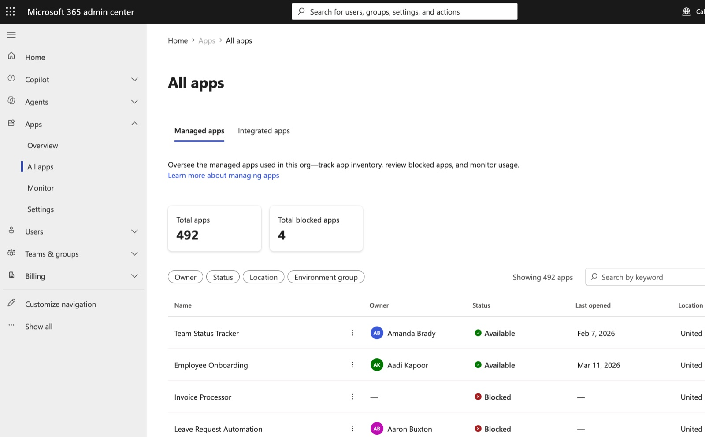

动态任务子智能体（Dynamic Task Agents）
无需单独创建或发布子机器人，主控智能体可在单次会话内并发拉起 3 个轻量 Claude Haiku 5.5 在隔离上下文中盲审 Apex、Meridian 与 Nimbus 标书以防交叉污染；随后再用一句话跨厂商拉起 Sol 模型挑刺复核（预计 2026 年 12 月全面商用）[3][4]。
生成式编码与对话工具已经把“搭出一个可演示界面或能对答的机器人”压缩到几分钟，但绝大多数企业项目仍停在构建（Build）与生产（Production）的断层前 [1][7]。一边是跑在个人电脑本地端口上、缺乏统一登录与合规审批的微应用孤岛；另一边是回答流畅、却无人敢免去人工逐单复核直接放进生产环境执行写操作的智能体 [1][7]。Microsoft Ignite 2026 四场相互咬合的核心专场补齐了这套生产拼图：BRK378 与 BRK259 重构了托管运行时与执行内核；BRK382 与 BRK285 给出了规模治理与有界放权路径 [1][3][5][7]。
01 / Four Production Chasms
企业应用与智能体的“构建（Build）”与“投产（Production）”遵循截然不同的评判标准 [7]。BRK285 开场做了两次现场举手投票：会场里绝大多数团队都搭出过能给出实用回答的智能体；追问“谁敢免去人工逐单审批、直接放它进生产系统执行动作”时，举手者寥寥无几 [7]。Azure 云运营需求工程团队（CODE）首席客户工程经理 Omprakash Reddy Adudodla 一语道破症结：演示原型只验证点子能不能跑通；生产系统追问的是当外部接口超时、跨天状态中断或推理漂移时，企业能否看清、管住并安全回滚 [7][8]。
不少团队还把投产误当成在一天搭出的单容器原型上继续堆功能 [7]。合作伙伴解决方案架构师 Tim Schaeps 复盘“订单到回款（Order-to-Cash）”原型时展示了这一隐患：团队连续提交代码往单容器里塞新特性，直到接入 Azure Cosmos DB 触碰租户“严禁公网端点”的安全红线而当场瘫痪 [7]。企业项目卡在投产前，根源在于传统开发栈在四个层面同时出现了断层 [1][3][5][7]：
| 生产断层维度 | 原型期的常见假象与反模式 | 推向企业生产时的真实工程崩塌 | 对应的平台级破局支点 |
|---|---|---|---|
| 1. 推理与控制断层 | 靠 2023 年串行拆分提示词底座拼凑流程，或靠自然语言提示词“祈祷模型别违规” [3] | 模型看不见全局业务目标，遇数万行表格塞爆上下文；缺少百分百触发的调用前拦截机制 [3][4] | Microsoft Copilot Harness：Copilot SDK 单循环 + 会话级 Azure 容器沙盒 + 六类确定性钩子（BRK259）[3][4] |
| 2. 宿主与接力断层 | 自然语言生成微应用跑在个人电脑 localhost 端口；业务原型交棒研发时无干净源码 [1] |
无 Entra 单点登录与合规连接器；事后才发现用了禁用数据源，全栈工程师被迫推倒重写 [1][2] | Copilot Managed Runtime（CMR）：零 localhost 托管、构建期策略前置与共享 Git 远程源码仓（BRK378）[1][2] |
| 3. 规模与账本断层 | 要么像审《蒙娜丽莎》一样卡死每份草稿，要么放任数千人混居默认环境野蛮生长 [5] | 无主僵尸资产泛滥、私调外部未授权接口，且创作者与 IT 均看不清实时算力点数账单 [5][6] | 双轨绿区与开放管理面：PPAC 路由 + MAC 首日默认绿区 CSP + 单一 OpenAPI 账本与 \$10 CoE（BRK382）[5][6] |
| 4. 状态与信任断层 | 以为配好工具就能一键开启“全自主”，上线出现幻觉后只会在提示词里写“请更努力思考” [7] | 跨数天复杂工单在长会话中丢状态；针对错误资源写出流畅诊断反而掩盖幻觉并引发跨团队推诿 [7][8] | 混合持久状态与爬山闭环：Studio 专员推理 + Durable Functions 状态机 + 逐轮追踪与六步爬山（BRK285）[7][8] |
这四道断层说明“Harness（执行内核）”与“Managed Runtime（托管运行时）”缺一不可。缺少容器化推理内核与确定性钩子，上云的应用只是脆弱的聊天外壳；缺少统一接管身份、Git 源码、网络沙盒与点数账本的托管运行时，再强的内核也走不出员工的个人电脑 [1][3][5]。图 1 展示了两大支柱如何与租户治理及爬山评测咬合为三层生产架构 [1][3][5][7]：
02 / Kernel: Microsoft Copilot Harness
跨越第一道断层，首先要淘汰 2023 年初为弥补早期模型短板而设计的“串行对话脚手架（Standard Harness）” [3]。Copilot Studio 首席产品经理 Alice Appleton 在 BRK259 中指出，旧底座强行将复杂请求切碎为固定串行子提示词。这虽压低了单步开销，却让模型看不见完整业务目标，遇到数万行财务表格便卡死 [3][4]。微软工程团队放弃修补旧框架，基于 GitHub、Microsoft Foundry、Copilot Cowork 与 Copilot Code 共用的 Microsoft Copilot SDK 从零重写内核 [3][4]。新内核剥离了纯研发提示词，补齐跨部门业务流程语义，并在每次会话启动时动态拉起专属 Azure 隔离容器（Execution Sandbox） [3][4]。
容器化内核让智能体能把大文件落盘并用脚本逐行解析，也打破了“多步自主循环必然烧穿预算”的顾虑 [3][9]。团队在约 500 道真实客户流程离线评测集上统一固定 Claude Sonnet 4.6 测试：容器命令行接管了确定性切片重算，配合单循环增量上下文拼接，新内核在四类业务能力全线提升的同时，把最昂贵的 输入词元（Input Tokens）消耗直接砍掉 45% [3][4][9]：
实测中 83%–88% 的输入词元命中低价提示词缓存，使成本加权输入词元净降 15%–21%；外部工具报错时，84%–91% 的回合能在同一循环内自主重算恢复 [3][9]。容器外层的 信任层（Trust Layer）隔离了原始连接凭据，对每次进出模型的流量强制执行 Microsoft Purview 数据防泄漏（DLP）检查与敏感度标签继承 [3][4]。前沿实验室平均每周至少发布一款新模型，平台通常数十分钟内即可完成评测上架；默认开启的 Auto 帕累托选模会在管理员策略内横跨 Anthropic、OpenAI、Mistral 与 SpaceXAI 自动平衡质量与成本 [3][4]。微软研发团队内部更运行着由 32 个 Copilot Studio 智能体、47 条协作连接与 6 个共享专家组成的全天候软件工厂，自动分流故障、提交修复代码并巡检每日点数账单来研发 Copilot Studio 本体 [3][4]。
无需单独创建或发布子机器人，主控智能体可在单次会话内并发拉起 3 个轻量 Claude Haiku 5.5 在隔离上下文中盲审 Apex、Meridian 与 Nimbus 标书以防交叉污染；随后再用一句话跨厂商拉起 Sol 模型挑刺复核（预计 2026 年 12 月全面商用）[3][4]。
工作流嵌智能体是在固定流程里引入大模型判断，Hooks 则相反：它在自主循环的固定切点强制挂载百分百触发的确定性规则 [3]。采购实测中，Session start 预载英国成本中心，Before tool（唯一拥有拦截与改参权的钩子）当场拦下超 £2,000 的 8 套入职包订单（continue: false），After tool 则在返回值进模型前脱敏隐私字段 [3][4]。
创作者可将固定入参锁为会话变量，仅当 Department = HR 成立时才向模型暴露薪酬工具与人事知识库，兼顾防幻觉与省词元 [3][4]。智能体既能凭 Entra OAuth 2.0 委托身份入向连接 Foundry、Microsoft 365 智能体开发包与私有虚拟网络代理（已全面商用），也能在 2027 年一季度全面商用后直接向外发布为远程 MCP 或 A2A 服务 [3][4]。

输入组装、模型调用、容器沙盒工具执行与外层凭据隔离/Purview DLP 审计形成完整闭环 [3][4]。

五大构建入口产出的应用自动入账盘点（实机纳管 492 款、拦截 4 款高危应用），彻底消除隐形本地端口 [1][2]。
03 / Host: Copilot Managed Runtime
智能体能可靠推理并受控调用工具后，下一步要解决多工具生成的全栈应用“往哪托管、如何协同演进”的第二道断层 [1]。2026 年 11 月 17 日全面商用（GA）的 Copilot 托管运行时（Copilot Managed Runtime，简称 CMR） 直接回应了这一痛点 [1][2]。产品总经理 Clay Wesener 在 BRK378 中指出，团队混用 Cowork、Copilot Studio、命令行与多款模型搭出了全部演示应用，没有任何一款成品停留在 localhost 本地端口上 [1][2]。应用发布至托管运行时后，平台自动配齐独立受管域名下的 Microsoft Entra 单点登录、后台专属 Git 远程源码仓库、1,500 余个受管连接器代理及管理中心实时台账 [1][2]。
托管运行时还打通了构建期策略前置与应用内双模智能 [1][2]。以往员工花掉大量词元写完应用，往往到上线审批时才因误用禁用连接器而推倒重来；现在托管运行时把环境组路由、连接器动作级白名单与共享范围直接注入构建智能体上下文，动笔前即对齐安全红线 [1]。这与 BRK285 在开发环境中挂载 Microsoft Learn MCP、先查云架构规范再落盘架构契约的做法一脉相承 [7]。首席产品经理 Emma Cooper 现场演示了两类递进应用：一类在已全面商用的 Copilot Cowork 中结合组织工作脉络（Work IQ）与 Figma 设计插件生成《Q4 2026 Atlas 项目路线图》，再经代号 Rayfin 的能力一键写入 Microsoft Fabric 数据库或 SharePoint 列表；另一类在 Copilot Studio 中构建通过 36 项自动质检的 Voyage Desk 核保台与 Gauge 现场巡检应用 [1][2]。巡检看板顶部用低时延行内提示词函数提炼即时风险摘要，右侧嵌入 Gauge 风险顾问智能体 跨 Dataverse 表与规程库追查北场（North Yard）逾期整改项 [1][2]。
服务超 40,000 家企业（含德国电信与英伟达）、累计创建逾 7,000 万个项目的 Lovable 已原生接入托管平台开发包 [1][2]。管理员约 20 分钟完成租户绑定后，业务人员生成的新员工入职应用即可一键直发托管运行时；Lovable 仅向微软运行时推送编译后的纯 React 前端代码，全程无权接触底层 Excel 或企业业务数据，身份鉴权与连接器读写全部闭环在客户租户内 [1][2]。
所有入口背后共写同一套标准 React/TypeScript Git 仓库 [1]。全栈工程师无需手工配置个人令牌，直接通过命令行与 Git 凭据管理器（GCM） 把业务专家在 Studio 里搭好的 Gauge 巡检应用克隆到本地编辑器；在 Home.tsx 补上巡检地图并在带安全横幅的本地开发服验证后，即可原路推回生产域名 [1]。研发团队还能直接部署自带模型与编排器的 Code Agents（早鸟预览），免去额外 Azure 配置即默认连通 Agent 365 [1][2]。
04 / Scale: Dual Green Zones & FinOps
五六种创作入口向全公司数千名员工敞开后，企业随即面对第三道断层：怎样既不像委托达·芬奇花三年画《蒙娜丽莎》那样卡死每份个人草稿，又不让默认环境滑向失控的影子系统 [5]？拥有约 77,000 名员工、服务全球 3.04 亿患者的跨国药企 诺华（Novartis） 在 BRK382 中给出了生产实证 [5][6]。诺华推行“护栏内放行”并开展 10 周公民开发者训练营，约 500 名活跃毕业生中有近 50% 将作品推上生产；自 2025 年 10 月起，主租户在用 Copilot Studio 智能体从 182 个增至 1,366 个（7.5×），月活创作者增至 3,312 人（2.6×） [5][6]。同期 Power Apps 扩至 27,862 款（含 50 款新代码应用），依靠**周期性所有者确权（Periodic Owner Attestation）**自动清退无主僵尸资产 [5][6]。
支撑这套规模秩序的底座，是 Power Platform 管理中心（PPAC）专家绿区与 Microsoft 365 管理中心（MAC）首日默认绿区的双轨配合，外加托管宿主（Managed Host）的运行时隔离 [1][5][6]：
Delete/Update 高危动作，还强制要求仅用 OAuth 身份认证连接数据库，配合 Microsoft Purview 必读守则与微软内部 Ask Mica 申诉助手化解合规阻力 [5][6]。在跨工具的托管运行时侧，绿区从租户首日起默认开启，开箱仅放行核心办公连接器，并在管理中心 All apps 视图统一盘点全域资产——BRK382 课件实拍已纳管 953 款受管应用并封禁 4 款违规应用 [1][5][6]。Bing），宿主便依据默认严格内容安全策略（CSP）当场掐断报错 [5]。应用交付支持平滑升级：小团队可直接用免配置的“单环境内建 Dev -> Test -> Prod 部署目标”，核心反洗钱与客户尽调负载则走跨环境严管流水线，并由高灵敏度 Monitor 在 1 小时内捕获健康波动直推 Teams 或 ServiceNow 工单 [5][6]。$10 超级卓越中心：创作者可在 Studio 左上角直看实时点数（如 88 credits）或在 Cowork 输入 /cost 查账；管理员则在管理中心 Cost management 设定如现场巡检 5,000 点数的试点上限，一屏统管全租户 2.5M 月度点数（1.5M 预付 + 1M 按量）与 ≥90% 阈值预警 [1][5][6]。微软还将全平台管理接口收口为单一权威 OpenAPI 规范，按月自动生成版本化网页接口、.NET/Python 开发包、Admin V2 连接器、15 组平台命令行与 Cowork 管理插件 [5][6]。Zohar 现场导入顾问团队 3 小时整理的资料包，仅花 10 美元、用时 30 分钟便在托管运行时上编译出一套全栈卓越中心治理应用（aka.ms/powerplatform360）[5][6]。
衔接创作者端顶栏点数器（88 credits）与 Cowork /cost 命令，统一纳管 1.5M 预付 + 1M 按量及 5,000 点业务上限 [1][5][6]。

Copilot Studio 调度 6 大专职推理角色，经安全网关与 4 路协议桥连接 Durable Functions 与云端跨天状态库及 Foundry 门禁 [7][8]。
05 / Autonomy: Durable State & Hill Climbing
内核、托管与租户治理就绪后，面对跨数天乃至数周的关键业务工单，企业还要跨越最后一道“敢不敢免审放权”的信任门槛 [7]。BRK285 拆解了微软 Azure 客户支持团队历时 18 个月将全自主客户服务（Fully Autonomous Customer Service，简称 FACS）推上生产的实战经验 [7][8]。在 Contoso 503 Service Unavailable 线上故障实录中，工单进入 Dynamics 365 后，系统无需追问客户索要订阅号便直连诊断接口，查明“上午 09:08 刚完成新部署，当前 0 of 3 实例健康” [7]。随后内置审校门禁核验诊断证据并给出回滚指引，系统持续保持跨轮状态，直到客户确认健康检查恢复才受控关单 [7]。
Ali Ijaz 与 Arun Masilamani 强调，这套生产系统的稳定并非靠“成熟后迁离低代码”，而是靠 低代码做敏捷专员推理、全代码管跨天持久状态 的清晰分工 [7][8]。Copilot Studio 在前端编排意图识别、证据合成、质量审校等 6 类专职角色；跨周工单状态持久化与工具超时升级兜底，则经由接口管理网关与 4 路协议桥交由 Azure Durable Functions 与 Cosmos 数据库承载 [7][8]。面对线上偶发幻觉，团队放弃在提示词里写“请更努力思考”的无效调优，转而运转 六步爬山（Hill Climbing）闭环 [7][8]。工程师把人工坐席改稿原因、专家评分量表与逐轮追踪工作台（Trace Studio）日志聚类为失败分桶，经 Microsoft Foundry 重放与金丝雀门禁逐个场景放开有界自主，彻底终结跨部门故障推诿 [7][8]。
不同业务场景所需的内核机制、托管形态与治理深度各不相同。切换下方企业负载架构选型与护栏推演台的五个场景标签，可分别查看工作流微应用、跨生态全栈接力、敏感审批智能体、数千人租户治理与跨天关键业务自主的分层配置与准入门禁：
按业务复杂度切换五类典型企业负载，查阅对应的 Harness 内核机制、Managed Runtime 托管路径、实证指标与生产准入边界。
Before tool / After tool 生命周期钩子锁死确定性边界，不靠自然语言提示词“祈祷合规” [1][3][7]。localhost 收归共享 Git 远程仓库与 Copilot Managed Runtime，确保外部工具不碰企业数据、专业研发免重写直接接力 [1][2]。06 / References: Four Microsoft Ignite 2026 Core Engineering Sources